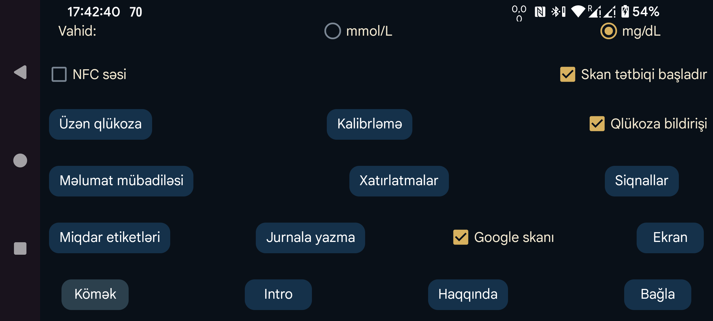

Qlükoza göstəricilərinin mmol/L və ya mg/dL ilə göstərilməsini seçin.
Skan zamanı titrəmə ilə yanaşı səs də verilir.
Bu seçim işarələnibsə, Juggluco ekranda açıq olmasa da, sensor NFC ilə skan edilərkən tətbiq işə salınır. Bir neçə tətbiq bu qaydada işə düşmək istəyirsə, Android hansı tətbiqdən istifadə ediləcəyini soruşur. Təcrübədə tətbiqi bir dəfə seçmək də, onu standart kimi təyin etmək də düzgün işləmir. Belə halda heç bir tətbiq ön planda olmadan skan etmək mümkün olmur. Juggluco-da bu seçimi söndürmək ən azı digər tətbiqlərdən birinin həmin üsulla açılmasına imkan verə bilər.
Root girişiniz varsa, Abbott-un LibreLink tətbiqinin NFC ilə avtomatik açılmasını da söndürə bilərsiniz (Libre 3 üçün işləmir). adb shell və ya Termux-da root hüququ əldə edin və bunları icra edin:
pm disable com.freestylelibre.app.nl/com.librelink.app.ui.common.NFCScanActivity
LibreLink 2.7.1 və daha köhnə versiyalarında isə bu əmr istifadə edilirdi:
pm disable com.freestylelibre.app.nl/com.librelink.app.ui.common.ScanSensorActivity
Buradakı com.freestylelibre.app.nl LibreLink-in Niderland versiyasının paket adıdır. Onu istifadə etdiyiniz versiyanın paket adı ilə əvəz edin. Paket adını (root hüququ olmadan da) bu əmrlə öyrənə bilərsiniz:
pm list package freestylelibre
Bundan sonra LibreLink-i ön planda açaraq sensorları skan edə bilərsiniz, lakin NFC skanı tətbiqi avtomatik başlatmayacaq. LibreLink 2.5.2 və sonrakı versiyalar root aşkarladıqda özləri çökür. Magisk-də tətbiqin adını dəyişməklə və ayrı-ayrı tətbiqləri DenyList (Magisk 24.3) və ya MagiskHide (Magisk 23.0) siyahısına əlavə etməklə root-u gizlətmək olar. Juggluco-nu da DenyList-ə əlavə edin. ABŞ FreeStyle Libre 2 sensorlarından istifadə etmirsinizsə, root yoxlaması olmayan köhnə LibreLink versiyasından istifadə etmək də mümkündür.
Root olmadan, adb shell vasitəsilə tətbiqi bütövlükdə deaktiv etmək mümkündür:
pm disable-user --user 0 com.freestylelibre.app.nl
Abbott-un müştəri xidmətlərinə müraciət etməzdən əvvəl tətbiqi yenidən aktiv edə bilərsiniz:
pm enable com.freestylelibre.app.nl
Bu seçim əvvəllər Android status sətrində qlükoza adlanırdı. Aktiv olduqda Bluetooth vasitəsilə gələn qlükoza göstəriciləri Android bildirişində və status sətrində səssiz göstərilir. Söndürdükdə rəqəm yerinə nöqtə görünür; bildiriş isə yalnız Sensora qoşulmaq üçün işləyir və ya Məlumat mübadiləsi üçün işləyir mətnini göstərə bilər. Android arxa planda davamlı işləyən tətbiqlərdən görünən bildiriş tələb edir; əks halda sistem tətbiqi asanlıqla dayandıra bilər. Juggluco yalnız Bluetooth vasitəsilə sensor söndürüldükdə və heç bir Güzgü bağlantısı olmadıqda bildirişi tam söndürür.
Bəzi telefonlarda qlükoza göstəricisini status sətrində görmək üçün Android-in bildiriş tənzimləmələrini dəyişmək lazımdır. Məsələn, Realme GT 5G-də Tətbiqlər → Juggluco → Bildirişləri idarə et → glucoseNotification bölməsində Səssiz olaraq təyin et seçimini söndürmək lazımdır; bundan sonra Status sətrində göstər aktiv görünür.
Ortanın solundakı menyuda Bildir seçimi ilə də Android bildirişi yarada bilərsiniz. Uyğun qurulduqda həmin bildiriş bəzi ağıllı saatlara da göndərilə bilər. Garmin saatlarında bu işləyir; digər saatlarda işləyib-işləmədiyi məlum deyil. Siqnallar da bildiriş yaradır.
Aktiv olduqda, hansı tətbiqin ön planda olmasından asılı olmayaraq, cari qlükoza göstəricisi kiçik üzən pəncərədə ekranda qalır. İlk dəfə aktiv edərkən Android sizi tətbiqlər siyahısına aparır. Orada Juggluco-ya Digər tətbiqlərin üzərində göstərmək icazəsini verməlisiniz.
Aşağı və yüksək qlükoza siqnallarını, bağlantı siqnalının itməsi barədə xəbərdarlığı və yeni göstərici bildirişini təyin edin.
Miqdarlara verilən etiketləri təyin edin. İnsulin dozaları, qəbul edilmiş karbohidratlar, futbol oynamağa sərf edilən saatlar və başqa qeydlər üçün istifadə ediləcək etiketləri seçdiyiniz ekran açılır. Garmin üçün Kerfstok tətbiqindən də istifadə edirsinizsə, həmin etiketlər saata göndərilir.
Juggluco-dan digər tətbiqlərə və serverlərə məlumat göndərməyin müxtəlif üsulları. Saatlara məlumat göndərmək üçün sol menyudakı Saat bölməsindən istifadə edin.
Müəyyən vaxt intervalı ərzində yemək və ya dərman miqdarını daxil etmədikdə siqnalın işə düşməsini təyin edin.
Google-un kod skaneri vasitəsilə Sibionics sensorlarının qablaşdırmasında, Dexcom G7/ONE+ sensorlarının aplikatorunda olan Data Matrix kodlarını və ortanın solundakı Güzgü menyusunda yaradılan QR kodunu skan edin. Seçim söndürülübsə, ZXing istifadə olunur. Google skanı əksər qurğularda daha yaxşı işləyir, lakin bəzən işləmir. Açıq xəta qaytararsa, avtomatik ZXing-ə keçilir; bəzi hallarda isə Google skaneri xəta bildirmədən də işləməyə bilər.
Hədəf aralığından dil seçiminə qədər məlumatların ekranda görünüşünə aid müxtəlif tənzimləmələr.